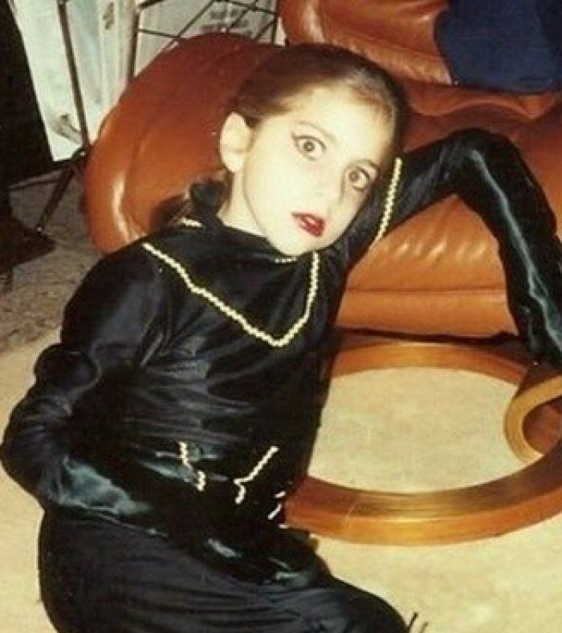

Primeros años
Lady Gaga nació el 28 de marzo de 1986 en el hospital Lenox Hill, en Manhattan, Nueva York. Con el nombre de Stefani Joanne Angelina Germanotta.
Hija mayor de Cynthia Louise Bissett, y el empresario Joseph Anthony Germanotta, Jr. Su padre dirigía una compañía que instalaba wifi en hoteles, y su madre fue vicepresidenta de la operadora de móviles Verizon.
Gaga tiene ascendencia italiana y francocanadiense, y una hermana llamada Natali, nacida en 1992.
Creció en el exclusivo Upper East Side de Manhattan en el seno de una familia católica y estudió en el colegio El Sagrado Corazón.
Con cuatro años aprendió a tocar el piano y a los trece compuso su primera canción. Un año después comenzó a participar en noches de micrófono abierto.
Creció escuchando a Queen, Michael Jackson, Madonna o David Bowie entre otros.
A los diecisiete años ingresó en la Escuela de Arte Tisch de la Universidad de Nueva York, donde estudió música. Aunque no finalizó sus estudios, los abandonó para iniciar su carrera musical.
Carrera
Conoció al productor y compositor RedOne y la primera canción que produjo junto a él fue Boys Boys Boys. Al no lograr que el tema fuese un éxito, volvió con sus padres y comenzó a actuar en un club neoyorkino. En esa época comenzó a tomar drogas y a participar en actuaciones de tipo burlesque.
En 2007 comenzó a colaborar con Lady Starlight. Juntas empezaron a actuar en locales del centro de Nueva York. Aparecieron en el festival de música estadounidense Lollapalooza. Posteriormente llegó a un acuerdo de publicación de su música con Sony/ATV.
Llegó a escribir canciones para Britney Spears, además de ser encargada por Interscope de escribir para los New Kids on the Block, Fergie y las Pussycat Dolls.
En 2008 se tiñe de rubio, abandona sus inicios rock, abraza el dance, y su debut, Just dance, arrasa en Canadá y Australia.
En ese año lanzó su primer disco, The Fame, que llegó al número uno en países como Canadá, Irlanda, Austria, Reino Unido, entre otros países, y al número dos en Estados Unidos. Obtuvo una nominación a los Grammy con el tema Just dance, en la categoría de Mejor canción dance. En octubre de 2009, le concedieron el premio Rising Star of 2009 de la revista Billboard.
En 2009 se publicó su segundo disco, The Fame Monster. Con el vídeo de Paparazzi, en el que resucita en versión robótica la Metrópolis, de Fritz Lang, afina por fin su discurso visual.
Actuó ante Isabel II. Gaga se hace global.
A principios de 2010, Billboard anunció que la canción Telephone, del álbum The Fame Monster, logró el número uno en la lista Pop Songs, siendo la única cantante en la historia que consigue su sexto número uno consecutivo.
En abril del 2010, el video de Bad Romance fue el video más visto de la historia de YouTube hasta entonces. En junio de 2010, la canción superó los cuatro millones de copias digitales vendidas, convirtiéndose de esta manera en la primera artista en tener tres sencillos con más de cuatro millones de copias digitales vendidas.
Gaga pretende hacer de su vida su mayor obra de arte. Se dice que es la primera superestrella global del siglo XXI. Sus actuaciones se definen como un concierto, una ópera pop o un espectáculo teatral con canciones y el fanatismo que despierta es innegable.
Entre sus mayores éxitos se encuentran Just Dance, Poker Face, LoveGame, Paparazzi, Bad Romance, Telephone o Alejandro.
En abril de 2010 Bad Romance supera los 200 millones de visitas y se convierte en el vídeo más visto de la historia de Youtube. 'Time' la elige artista del año.
Gaga lanzó su segundo álbum de estudio, Born This Way, el 23 de mayo de 2011, una mezcla de música electrónica con rock 'n' roll, y pop. Vendió más de un millón de copias en su primera semana tras su lanzamiento en los Estados Unidos, encabezando el Billboard 200. Además de más de ocho millones de copias en ventas en todo el mundo, Born This Way recibió tres nominaciones a los premios Grammy.
Su siguiente álbum de estudio ARTPOP fue puesto a la venta el 6 de noviembre de 2013 con críticas desiguales, que no le impidieron convertirse en su segundo álbum número uno en los Estados Unidos con ventas en la primera semana de 258.000 ejemplares.
Gaga se separó de su manager Troy Carter por diferencias creativas, y en junio de 2014, junto a su nuevo manager Bobby Campbell se unió Artist Nation, la división de gestión de artistas de Live Nation Entertainments.
Colaboró con el cantante Tony Bennett en un álbum de clásicos del jazz al que se tituló Cheek to Cheek y que fue estrenado el 19 de septiembre de 2014, entrando en lo más alto del Billboard 200, convirtiéndose en su tercer número uno en los Estados Unidos. Este álbum recibió un premio Grammy.
Su nombre artístico, Lady Gaga, se lo puso el productor musical Rob Fusari, ya que cuando quedaban en el estudio para trabajar, ella, en vez de saludarle con un hola, le cantaba Radio Ga Ga, del grupo Queen. Por lo que Fusari cambió Radio por Lady y surgió el apodo de Lady Gaga.
El 6 de enero de 2019, ganó un Globo de Oro en la categoría Mejor canción original por Shallow de la película A Star Is Born.
Stupid Love, el sencillo principal de su sexto álbum de estudio Chromatica, se lanzó el 28 de febrero de 2020. El álbum tenía prevista su presentación el 10 de abril de 2020, pero se pospuso para una fecha posterior debido a la pandemia del coronavirus COVID-19.